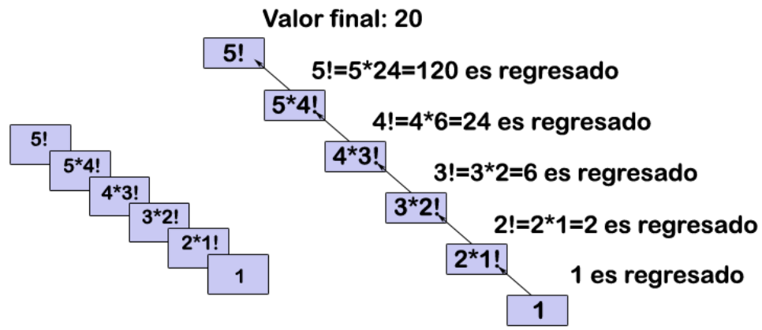
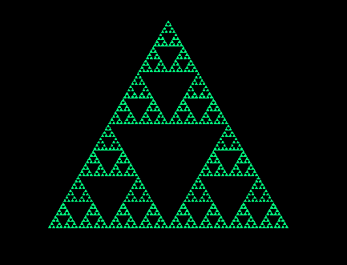

Introducción
La recursividad es un concepto clave en programación que permite a las funciones llamarse a sí mismas para resolver problemas complejos. En este trabajo se presentan ejemplos prácticos como el factorial, Fibonacci, Torres de Hanói y fractales.
Definición de Recursividad
La recursividad es una técnica en programación en la que una función se llama a sí misma hasta alcanzar un caso base que detiene el proceso.
Procedimientos Recursivos y Aplicaciones
Se aplican en búsqueda, ordenamiento, estructuras como árboles y grafos, y en algoritmos matemáticos.
Características
- Llamada a sí misma
- Caso base definido
- Uso de pila de memoria
Complejidad Computacional
Los algoritmos recursivos pueden ser ineficientes si no se optimizan. Ejemplo: Fibonacci simple tiene complejidad O(2^n), mientras que con memoización puede reducirse a O(n).
Ejemplos de Algoritmos Recursivos
Factorial
function factorial(n) {
if (n <= 1) return 1;
else return n * factorial(n-1);
}
Fibonacci
function fibonacci(n) {
if (n <= 1) return n;
else return fibonacci(n-1) + fibonacci(n-2);
}
Torres de Hanói
function hanoi(n, origen, destino, auxiliar) {
if (n == 1) moverDisco(origen, destino);
else {
hanoi(n-1, origen, auxiliar, destino);
moverDisco(origen, destino);
hanoi(n-1, auxiliar, destino, origen);
}
}
Fractales
Ejemplo gráfico de fractal como el triángulo de Sierpinski.
Conclusión
La recursividad es esencial en ciencias computacionales, permitiendo simplificar problemas complejos y desarrollar algoritmos elegantes y potentes.
Referencias IEEE
- [1] J. Smith, "Introducción a la Recursividad", Editorial Académica, 2020.
- [2] M. Pérez, "Algoritmos Recursivos en Programación", TechBooks, 2021.
- [3] L. Gómez, "Programación y Complejidad", Universidad XYZ, 2022.
- [4] K. Johnson, "Fractales y Recursión", Video educativo, YouTube, 2023.
- [5] A. Rodríguez, "Torres de Hanói: Algoritmos Recursivos", Blog académico, 2021.
- [6] C. Martínez, "Fibonacci y Recursividad", Revista de Computación, 2020.